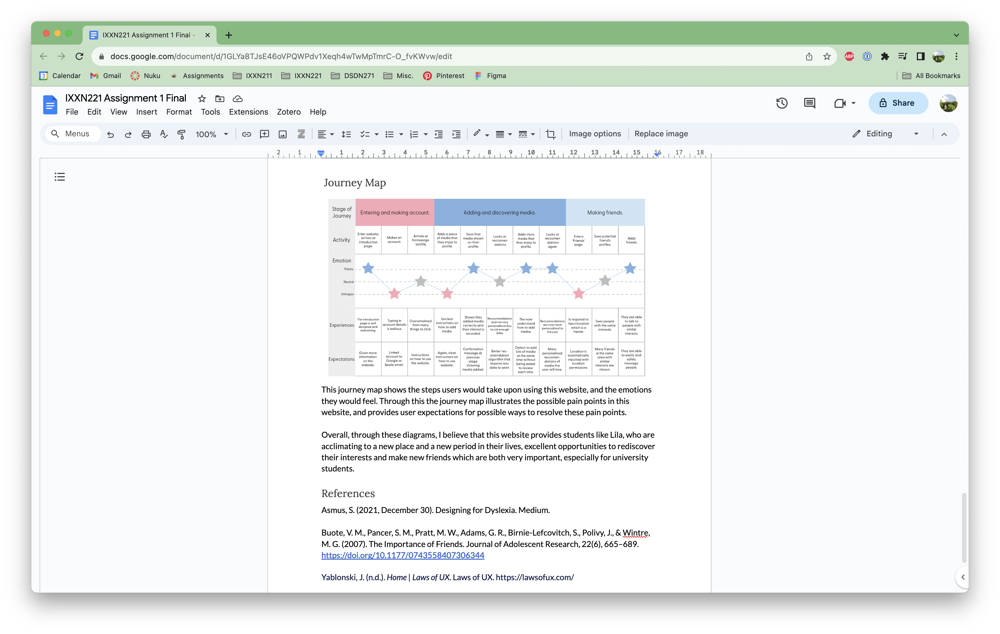

Week 5 Blog: Assignment 1 Finished
Assignment
I started the week by trying to finish my research report in time for hand in, I was struggling with figuring out what I was actually meant to write, and then once I worked that out I struggled to stay under the word count, so my final paragraph ended up being quite short.
Lecture
There was no main lecture this week, so after the report hand-in I didn’t do any other assignment work for this class, and focused on my other classes, and due to this, this blog entry is quite short.
Coding Lecture
For the coding lecture this week we discussed CSS grids, which I found a very useful way to set out websites. I will probably refer back to this lecture when I am coding later on in the trimester. I already have a (small amount) of coding experience, so I was already familiar with most of the content discussed in the lectures, but having these lectures refresh that knowledge will definitely help me out with coding at the end of this course.